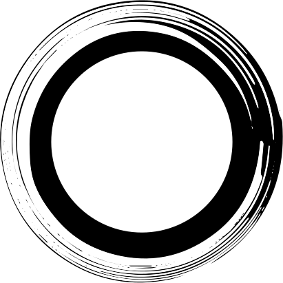

<link rel="import" href="../../bower_components/polymer/polymer-element.html">
<link rel="import" href="../../bower_components/paper-toggle-button/paper-toggle-button.html">
<link rel="import" href="../../bower_components/paper-slider/paper-slider.html">
<link rel="import" href="increment-stepper.html">
<link rel="import" href="ptg-image.html">

<link href="https://fonts.googleapis.com/css?family=Montserrat|Roboto" rel="stylesheet">

<dom-module id="practice-page">
  <template>
    <style>
      :host {
        display: block;
        --max-width: 600px;
        --bar-height: 40px;
        --tone-size: 80px;
        --next-tone-width: 23px;
      }
      * {
        box-sizing: border-box;
        color: white;
      }
      main {
        margin: auto;
        height: 100%;
        max-width: var(--max-width);
        width: 100%;
        display: flex;
        flex-direction: column;
        background: linear-gradient(
          to top right
          , rgba(51, 51, 51, .5) 0%
          , rgba(51, 51, 51, .5) 35%
          , rgba(255, 0, 0, .5) 35%
          , rgba(255, 0, 0, .5) 65%
          , rgba(51, 51, 51, .5) 65%
          , rgba(51, 51, 51, .5) 100% 
        );
      }

      header, footer {
        width: 100%;
        height: 120px;
      }      

      header {
        margin-top: 5vh;
        display: flex;
        flex-direction: row;
        justify-content: flex-start;
        position: relative;
      }

      section {
        width: 100%; 
        margin: auto;
        flex: 1;
      }

      footer {
        margin-bottom: 5vh;
        position: relative;
        display: flex;
        max-width: 60%;
        justify-content: flex-start;
        flex-direction: row;
        flex-wrap: wrap;
      }

      paper-slider {
        width: 100%;
      }

      #bpm-input {
        @apply --ptg-font-body-base;
        color: white;
        margin-left: 40px;
        background-color: black;
        border: 0.5px solid darkgrey;
        width: 60px;        
        height: 40px;
        text-align:center;

      }

      footer span {
        line-height: 118px;
      }

      .flex-end {
        justify-content: flex-end;
      }

      .relative {
        width: 100%;
        height: 100%;
        position: relative;
      }

      #signatureDash {
        text-align: center;
        line-height: 120px;
        font-size: 36px;
        margin: 0;
        color: grey;
      }      


      #circle  {
        height: 80%;
        max-height: calc(var(--max-width) - 60px);
        /* width: var(--tone-size); */
        z-index: 1;
        position: absolute;
        padding: 0;
        margin: 0;
        left: 50%;
        top: 50%;
        -webkit-transform:translate(-50%, -50%);
        -moz-transform:translate(-50%, -50%);
        -ms-transform:translate(-50%, -50%);
        -o-transform:translate(-50%, -50%);
        transform:translate(-50%, -50%);
      }

      #current-tone {
        height: calc(var(--tone-size) - 4px);
        width: var(--tone-size);
        z-index: 2;
        position: absolute;
        padding: 0;
        margin: 0;
        left: 50%;
        top: 50%;
        -webkit-transform:translate(-50%, -50%);
        -moz-transform:translate(-50%, -50%);
        -ms-transform:translate(-50%, -50%);
        -o-transform:translate(-50%, -50%);
        transform:translate(-50%, -50%);
      }

      #next-tone {
        position: absolute;
        padding: 0;
        margin: 0;
        right: 14px;
        width: var(--next-tone-width);
        height: 50px;
        height: calc(var(--bar-height) - 4px);  
        top: calc(50% - var(--next-tone-width));
        z-index: 2; 
      }

      #next-text {
        display: block;
        z-index: 1;
        position: absolute;
        padding: 0;
        margin: 0;
        right: 0;
        top: calc(50% - calc(var(--bar-height)*1.2));
        height: calc(var(--bar-height)/2);
        width: 80px;        
      }

      #bar-right {
        display: block;
        background-color: #FFFFFF;
        z-index: 1;
        position: absolute;
        padding: 0;
        margin: 0;
        right: 0;
        top: calc(50% - calc(var(--bar-height)/2));
        height: var(--bar-height);
        width: 50%;
      }

      @media screen and (min-device-width: 599px) {
        #current-tone {
          height: calc(var(--tone-size) * 1.5);
          width: calc(var(--tone-size) * 1.5);
        }
        #bar-right {
          height: calc(var(--bar-height) * 1.5);
        }

        #next-text {
          top: calc(50% - calc(var(--bar-height) * 1.5));
          height: calc(calc(var(--bar-height)*1.5)/2);
        }
        #next-tone {
          width: calc(var(--next-tone-width) * 1.5);
          height: calc(calc(var(--bar-height)-4px) * 1.5);   
          top: calc(50% -4px);
        }
      }

      paper-icon-button {
        position: absolute;
        right: 4px;
        top: 42px;
        color: #FFFFFF;
      }

      [hidden] {
        display: none;
      }

    </style>

    <main>
      <header>
        <increment-stepper 
          values="[[beats]]"
          selected-index="{{beatIndex}}"
          selected-value="{{beat}}"
        ></increment-stepper>

        <p id="signatureDash">/</p>

        <increment-stepper 
          values="[[measures]]"
          selected-index="{{measureIndex}}"
          selected-value="{{measure}}"
        ></increment-stepper>

        <paper-toggle-button checked="{{runGenerator}}">On/Off</paper-toggle-button>
        <paper-icon-button 
          icon="ptg-icons:settings" 
          alt="settings" 
          on-click="_switchPageIntend"
        ></paper-icon-button>
      </header>

      <section class="relative">
          
          <ptg-image id="current-tone" hidden$="[[!tone]]" source="[[_computeImgPath(tone)]]"></ptg-image>
          <ptg-image id="next-tone" hidden$="[[!nextTone]]" source="[[_computeImgPath(nextTone)]]"></ptg-image>
          <ptg-image id="next-text" hidden$="[[!nextTone]]" source="../../images/next.svg"></ptg-image>
            
          <div id="bar-right"></div>
      </section>

      <footer>
        <span>BPM</span>
        <paper-slider pin min="30" max="200" editable value="{{bpm}}"></paper-slider>
        <input id="bpm-input" min="30" max="200" type="number" value="{{bpm::change}}">
        <paper-slider pin min="30" max="200" value="{{bpm}}"></paper-slider>
      </footer>
    </main>

  </template>

  <script>
    /**
     * `practice-page` Description
     *
     * @summary ShortDescription.
     * @customElement
     * @polymer
     * @extends {Polymer.Element}
     */
    class PracticePage extends Polymer.Element {
      static get is() { return 'practice-page';}
      static get properties() {
        return {
          tone: {
            type: String,
            value: ''
          },
          nextTone: {
            type: String,
            value: ''
          },          
          beats: {
            type: Array,
            value: function () {
              return ['1', '2', '3', '4', '5','6', '7', '8', '9','10', '11', '12', '13']
            }
          },
          beatIndex: {
            type: Number,
            value: 2
          },
          beat: {
            type: String,
            notify: true
          },
          measures: {
            type: Array,
            value: function () {
              return ['2', '4', '8', '16']
            }
          },
          measureIndex: {
            type: Number,
            value: 2
          },
          measure: {
            type: String,
            notify: true
          },   
          runGenerator: {
            type: Boolean,
            notify: true
          },
          bpm: {
            type: String,
            notify: true
          }       
        };
      }

      _computeImgPath(toneWithOctave) {
        // Cut off octave Number and replace # with sharp (since Filepaths don't like #)
        var tone = toneWithOctave.substring(0, toneWithOctave.length -1).replace("#", "sharp");
        return "../../images/" + tone + ".svg";
      }

      _switchPageIntend() {
        this.dispatchEvent(new CustomEvent('switch-page-intend'));
      }
    }

    window.customElements.define(PracticePage.is, PracticePage);
  </script>
</dom-module>